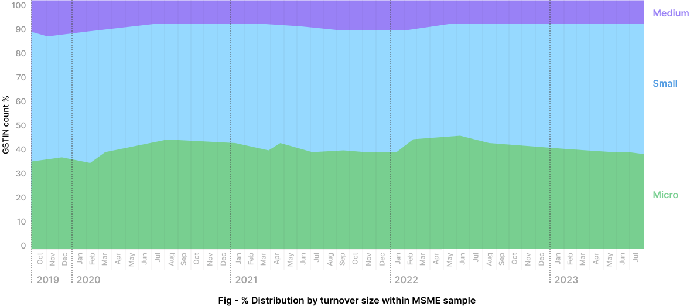
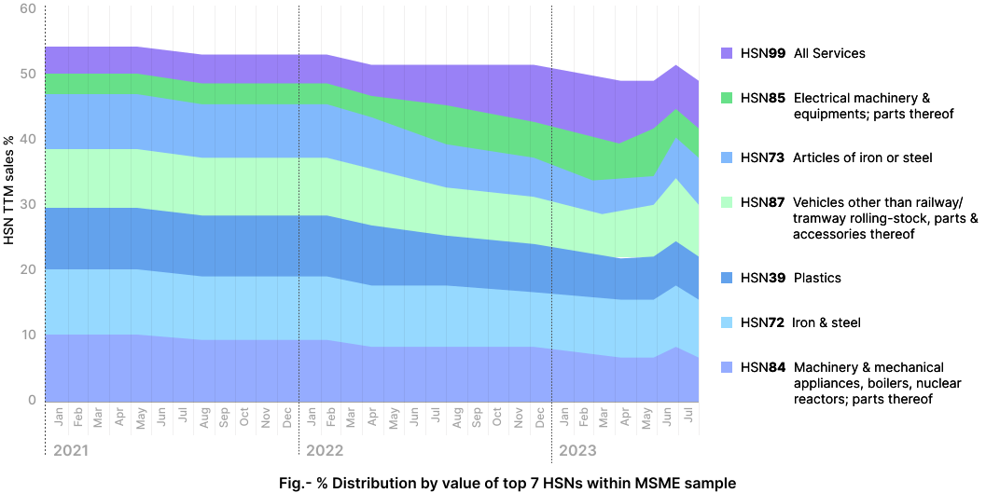
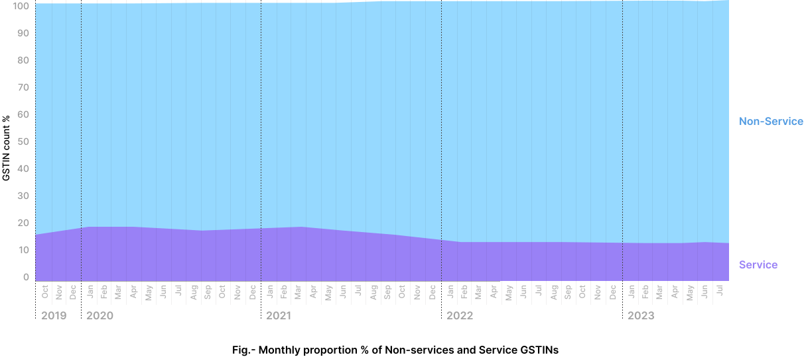
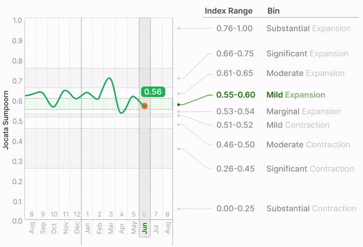
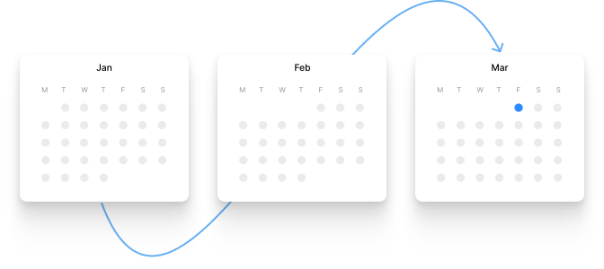

Jocata Sumpoorn is constructed using consent-enabled and anonymised data of more than 50,000 MSMEs seeking credit from financial institutions starting from October 2019 to date.
Geographic Distribution of Sumpoorn MSMEs
The sample is well-distributed across India ensuring representativeness of the Index.

States & UTs
Turnover Distribution of Sumpoorn MSMEs
The sample is well-distributed as per turnover ensuring representativeness and stability of the Index.

Note: Above classification is based on the revised GoI definition of MSMEs (w.e.f 1st July 2020). However, as Investment in plant and machinery is not available in GST returns, the classification is limited to TTM turnover and may not accurately represent the MSME status in some cases.
GOI Definition of MSME
| Entity | Turnover | Investment* |
|---|---|---|
| Micro | <= ₹ 5 cr. | <= ₹ 1 cr. |
| Small | <= ₹ 50 cr. | <= ₹ 10 cr. |
| Medium | <= ₹ 250 cr. | <= ₹ 50 cr. |
*Investment in Plant and Machinery or Equipment
Sector-wise Distribution by Value
(Top
7 HSNs)
The sample is well-distributed across sectors as reflected by the Top 7 HSN mix remaining largely stable over time ensuring Index representativeness and stability.

Note: A GSTIN is classified as belonging to an industry, if TTM sales of a particular HSN (2-digit level) in a month is > 50% of sum of TTM sales of all HSNs by that GSTIN for the same month.
Activity Distribution (Non-Services and Services)
The split of GSTINs engaged in non-service (manufacturing + trading) and service activities are stable over time.

Note: Source data limitations (within consent-led GST returns data) prevent further breakdown of non-services distribution into its constituent parts - manufacturing and trading distribution.
Methodology
Jocata Sumpoorn is a relative amplitude adjusted composite diffusion index that is developed using actual monthly sales data reflected in official GSTIN returns of credit-seeking MSMEs and is not based on survey data.
Using GST Returns calculate MSME TTM sales for current and previous month.
Calculate delta of growing and declining MSMEs and delta of amplitude of sales between them.
For each GSTIN, calculate % difference between current and previous month TTM sales.
Develop a relative amplitude adjusted diffusion index.
Algorithmically scale for values ranging from 0 to 1.
Considerations
Data Source
- GSTIN is an authentic, reliable, and official source of MSME sales data.
- As a GST-ASP (Authorised Service Provider), Jocata fetches data digitally from the GSTIN network, further ensuring data authenticity and accuracy.
Approach Rationale
- Using count and amplitude overcomes shortcomings of a count-based diffusion approach and effectively captures magnitude of economic activity.
- As ‘sales amplitude’ has been incorporated into the diffusion approach, outliers need to be handled and output scaled using sigmoid function.
- TTM approach ensures business seasonality is captured and idiosyncratic fluctuations smoothened out using a moving average.
Data Length & Sample
- Minimum 13 months of sales data (GSTR1) is required to calculate the Index for a particular month.
- Minimum 1000 MSMEs are considered to release the Index for any month.
- Current monthly count of MSMEs is ~2500.
Index Bin Ranges
and their Interpretation
The Index measures MSME sales performance on a scale of 0 to 1, where the bin ranges represent the state of contraction or expansion of economic activity of the sector.


Index publishing frequency
The Index will be released monthly with only a four-week reporting cycle after the reference month ends (the Index for January will be published in the 1st week of March).